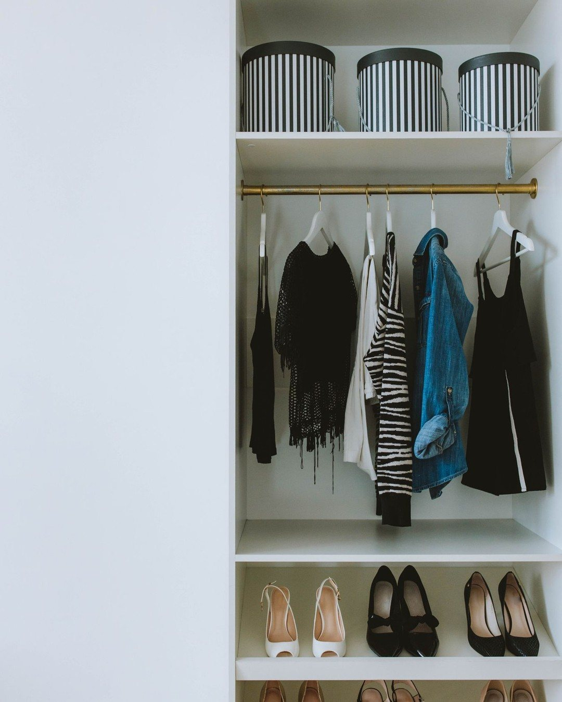
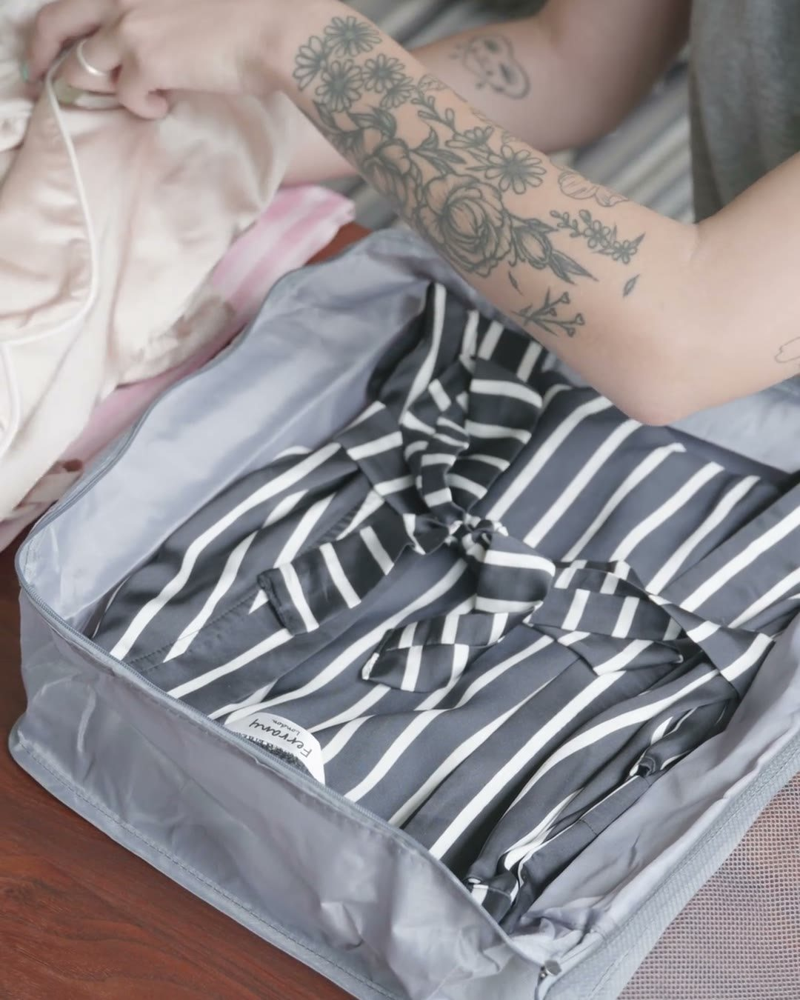
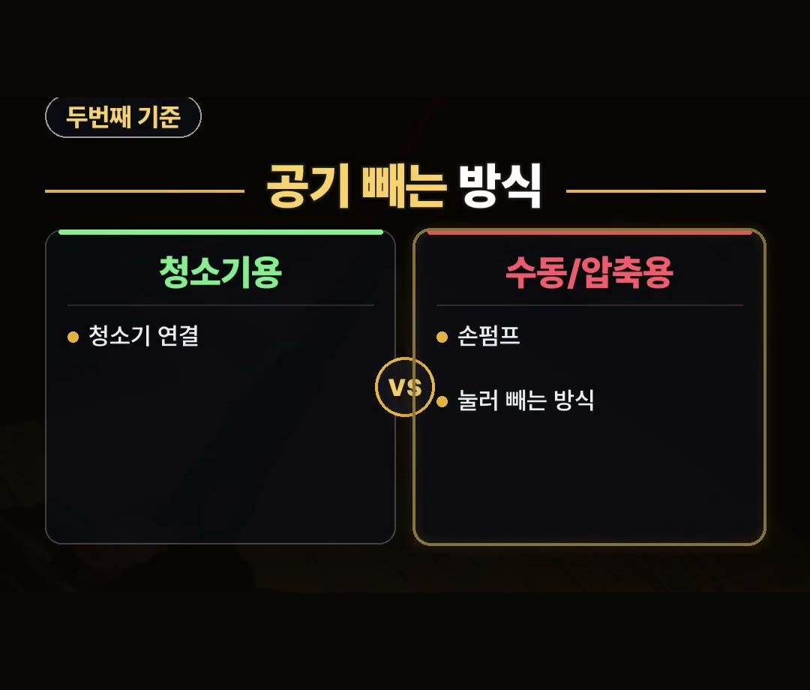

이불 압축팩 고를 때 상품 설명 표기 3가지 확인 방법
※ 이 글에는 제휴 링크가 포함되어 있으며, 링크를 통해 구매하시면 일정 수수료를 받을 수 있습니다. (가격은 같습니다)
※ 이 포스팅은 쿠팡 파트너스 활동의 일환으로, 이에 따른 일정액의 수수료를 제공받습니다.
※ 이 콘텐츠는 토스쇼핑 쉐어링크 활동의 일환으로, 링크를 통한 구매가 발생하면 일정 수수료를 지급받습니다.

상품 설명에 가로 80, 세로 100센티미터 특대 3개 1세트로 구성된 것으로 적힌 이불 압축팩 제품도 시중에서 판매되고 있습니다.
두꺼운 이불이나 계절 의류를 정돈하려 할 때 압축팩을 선택하지만 포장 표시를 확인하지 않고 무작정 고르면 쓰지 못하고 돈만 버리는 일이 발생할 수 있습니다.
사기 전에 상품 설명에서 3가지를 꼭 확인해 두시면 도움이 됩니다.
이불 압축팩을 선택할 때는 가로 80, 세로 100센티미터 표기와 같은 크기와 방식, 소재 문구를 꼭 확인하세요.
3가지 표기만 잘 짚어보아도 잘못 사서 돈 버리는 일을 줄일 수 있습니다! 💡

이불 압축팩 대형 고를 때 첫째 기준: 크기 표시
이불 압축팩을 고를 때 첫째로 볼 부분은 크기 표시입니다.
보관하려는 이불을 먼저 접은 상태에서 가로와 세로 규격을 확인해야 합니다.
이불 크기보다 압축팩의 규격이 더 커야 이불이 안으로 제대로 들어갑니다.
포장 겉면이나 설명에 기재된 가로세로 수치를 꼭 미리 살펴보고 선택하시길 권합니다.

이불 압축팩 추천 전 둘째 기준: 공기 빼는 방식
둘째로 살펴볼 점은 공기를 빼는 방식입니다.
집에 있는 도구와 방식이 들어맞는지 사전 체크가 필요합니다.
- 일반 청소기 연결용: 청소기 노즐을 대고 공기를 흡입하는 타입
- 수동/압축용: 손펌프를 이용하거나 눌러서 빼는 방식
집에서 보유한 청소기 형태나 본인이 편하게 쓸 수 있는 방식을 생각해 알맞은 형태를 고르는 것이 좋습니다.

주의 소재 문구 체크
셋째는 넣어선 안 되는 주의 소재 표기입니다.
압축팩 안에 모든 소재의 의류나 이불을 넣을 수 있는 것은 아니기 때문입니다.
제품 설명 문구에 오리털이나 특정 소재를 넣지 말라는 주의 표시가 포함되어 있는지 반드시 체크해야 합니다.
오리털 표시는 꼭 살펴보세요.
정리
- 접은 이불 가로세로 규격보다 압축팩 크기 표시가 더 커야 들어갑니다.
- 일반 청소기 연결용인지 손펌프나 눌러 빼는 수동 방식인지 확인해야 합니다.
- 오리털이나 특정 소재를 넣지 말라는 주의 문구를 잘 살펴봐야 합니다.
제품 링크는 아래에 모아 두었어요.
📌 2026년 10월 기준 정보예요. 가격은 시기에 따라 달라질 수 있어요.
영상 화면: Pexels (Leeloo The First, Liliana Drew, Timur Weber, hello aesthe, Антон Леонардович Варфоломеев)
사진: Pexels (Anastasia Shuraeva)